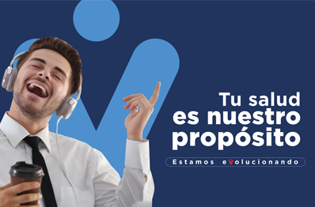

Servicios NUEVA EPS
La Nueva EPS ofrece servicios integrales de salud a través de sus regímenes Contributivo y Subsidiado, incluyendo consulta externa, citas médicas, laboratorios, urgencias y programas especiales. La atención se gestiona mediante una red de IPS asignada, accesibles vía su portal web, la app móvil, y líneas telefónicas 01 8000 954400 (Contributivo) o 01 8000 952000 (Subsidiado).
Servicios Destacados
-Citas Médicas: Generales y especialistas, con opción de agendamiento en línea o telefónico.
-Urgencias: Red de hospitales y clínicas a nivel nacional (ej. Clínica Nuestra Señora de los Remedios en Cali).
-Autorizaciones: Trámite para procedimientos y medicamentos.
-Programas de Promoción y Prevención: Atención a enfermedades crónicas (cardiovascular, renal) y materno-perinatal.
-Atención en Casa: Estrategia "Cuidándote en Casa" para atención extramural en algunas regiones.